1.架构1.1Flink运行架构1.2Flink作业提交方式1.2.1 Yarn session1.2.2 Yarn PerJob1.2.3 Yarn Application1.2.4 三种作业提交方式对比1.2.5 公司怎么提交的实时任务，有多少 Job Manager、Task Manager？1.3 任务调度原理1.3.1 数据流图（Dataflow Graph）1.3.2 并行度（Parallelism）1.3.2.1 什么是并行计算1.3.2.2 并行子任务和并行度1.3.2.3 并行度设置1.3.3 分区策略1.3.3.1 什么是Partition1.3.3.2 分区策略1.3.4 算子链（Operator Chain）1.3.4.1 算子间的数据传输1.3.4.2 合并算子链1.3.5 作业图（JobGraph）与执行图（ExecutionGraph）1.3.6 任务（Tasks）和任务槽（Task Slots）1.3.6.1 什么是任务槽1.3.6.2 任务对任务槽的共享1.3.6.3 任务槽和并行度的关系1.4 问题1.4.1 Flink的一个作业是如何生成的？2.DataStream API3.时间与窗口3.1 水位线3.1.1 Flink中有几种时间语义3.1.2 什么是watermark？3.1.3 水位线是如何处理乱序数据的？3.1.4水位线的特性？3.1.5 水位线是如何传递的？3.1.6 如何生成水位线？3.2 窗口3.2.1 窗口的理解3.2.2 窗口分类，都有哪些窗口3.2.3 迟到的数据的处理3.2.4 水位线是如何传递的？3.2.5 海量Key去重4.多流转换5. 状态编程5.1 状态机制5.1.1 说一下Flink状态机制？5.1.2 什么是状态？5.1.3 有状态算子一般处理流程5.1.4 状态分类6.容错机制6.1 Checkpoint机制6.1.1 什么是checkpoint6.1.2 如何实现一个分布式系统的全局状态保留功能6.1.3 Flink中exactly once和at least once checkpoint的时候有什么区别6.1.4 checkpoint制作的snapshot快照存储方式有哪些？6.1.5 checkpoint相关配置6.1.6 从检查点恢复状态的具体步骤？6.1.7 检查点算法—基于Chandy-Lamport算法的分布式快照**6.1.8 分布式快照算法—异步分界线快照（asynchronous barrier snapshotting）6.2 exactly-onec精确一次6.2.1 状态一致性（状态 Exactly-once）6.2.2 端到端一致性（端到端 Exactly - once）6.2.3 如果下级存储不支持事务，Flink怎么保证exactly-once？6.3 问题总结6.3.1 Flink作业在很多情况下有可能失败，失败之后重新运行时，是如何保证数据一致性的？7.Flink SQL7.1 API7.1.1 程序架构7.1.2 表环境TableEnvironment7.1.3 创建表7.1.4 表和流转换7.1.5 支持的数据类型7.2 流处理中的表7.3 时间属性和窗口7.3.1 时间7.3.2 窗口7.3.2.1 窗口表值函数（Windowing TVFs，新版本）7.4 聚合7.4.1 窗口聚合7.4.2 开窗聚合7.4.3 窗口TopN7.5 Join7.5.1 双流Join（Regular Join）7.5.2 Window Join7.5.2 区间Join（Interval Join）7.5.3 时态表 Join（Temproal Join）7.5.4 自定义函数 UDTF8.压测与监控8.1 Flink反压机制8.1.1 Flink数据交换8.1.2 Flink的Credit-based反压机制8.1 怎么做压力测试和监控？9. 实时数仓9.1 事实数仓案例9.1.1 菜鸟仓配实时数据仓库10. 性能优化10.1 数据倾斜10.1.1 原理10.1.2 数据倾斜的影响10.1.3 如何定位数据倾斜10.1.4 解决方法10.1.4.1 keyBy 之前发生数据倾斜10.1.4.2 keyBy后的聚会操作存在数据倾斜10.1.4.3keyBy后的窗口聚合操作存在数据倾斜10.2 并行度设置10.2.1 全局并行度计算10.3 Flink SQL优化10.3.1 设置空闲状态保留时间10.3.2 开启MiniBatch
1.架构
1.1Flink运行架构


简单来说：当Flink启动集群后，首先会启动一个JobManager和一个或多个TaskManager。由Client提交任务给JobManager，JobManager再调度任务到各个TaskManager去执行，然后TaskManager将心跳和统计信息汇报给JobManger。TaskManager之间以流的形式进行数据的传输。
Client（任务提交客户端）
是Flink作业任务提交客户端，主要将批处理或流处理应用程序编译为数据流图（JobGraph），然后提交给JobManager。
Client不是运行时和程序执行的一部分，而是用于准备数据流并将其发给JobManager。之后，客户端可以断开连接（分离模式），或保持连接来接收进程报告（附加模式）。
JobManager（任务协调者）
JobManger具有许多与协调Flink应用程序的分布式执行有关的职责：它决定何时调度下一个task（或一组task）、对完成的task或执行失败做出反应、协调checkpoint、协调从失败中恢复等。这个进程由三个不同的组件组成：
ResourceManger
ResourceManger负责Flink集群中的资源提供、回收、分配—它管理task slots，这是Flink集群中资源调度单位。ResourceManager可以分配TaskManager中的slots，新启动的TaskManager，需要向ResourceManager进行注册，之后它里面的资源才能服务与作业的请求。
SlotManager
管理着Slot状态，这些Slot状态是通过TaskExecutor到ResourceManger之间的心跳来进行更新的，在心跳信息中包含了TaskExecutor中所有的Slot状态。
当JobManger调度一个任务时候，会向ResourceManger发起Slot请求。收到请求的ResourceManger会转交给SlotManager，SlotManager会去检查它里面的可用的Slot有没有符合请求条件的。如果有的话，它就会向相应的TaskExecutor发起Slot申请。如果请求成功，TaskExecutor会主动想的向JobManster offer 这个slot。
Dispatcher
Dispatcher提供一个Rest接口，用来提交Flink应用程序执行，并为每个提交的作业启动一个新的JobMaster。它还运行Flink WebUI来提供作业执行信息。
JobMaster
JobMaster负责管理单个JobGraph的执行，Flink集群中可以同时运行多个作业，每个作业都有自己的JobMaster。
始终至少有一个JobManager。高可用（HA）设置中可能有多个JobManager，其中一个始终是leader，其他的则是standby。
TaskManager
TaskManager（也称为worker）执行作业流的task，并且缓存和交换数据流。
必须始终至少有一个TaskManger。在TaskManger中资源调度的最小单位是task slot。TaskManger中task slot的数量表示并发处理task的数量。请注意一个task slot中可以执行多个算子。
Slot是资源调度的最小单位，slot的数量限制了TaskManager能够并行的任务数量
1.2Flink作业提交方式
Flink作业提交方式主要有三种：Yarn session、Yarn PerJob、Yarn Application
1.2.1 Yarn session
会话模式需要先启动新的Yarn Session集群：通过Yarn Client向yarn提交Flink创建集群的申请，Yarn分配资源，在申请的yarn container中初始化并启动JobManager进程，初始化Dispatcher、ResourceManager，启动相关的RPC服务，等待Client通过Rest接口提交作业。

作业提交：
（1）Client通过Rest向分发器Dispatcher提交JobGraph
（2）Dispatcher是Rest接口，不负责实际的调度、执行方面的工作，当收到JobGraph后，为作业创建一个JobMaster，将工作交给JobMaster（负责作业调度、管理作业和Task的生命周期）
作业调度执行：
（3）JobMaster向资源管理器请求资源（slots）
（4）资源管理器向Yarn ResourceManager请求container资源
（5）Yarn启动新的TaskManager容器
（6）TaskManager启动之后，向Flink的资源管理器注册自己的可用slots。
（7）资源管理器通知TaskManager为新的作业提供slots
（8）TaskManager连接到对应的JobManager，提供slots
（9）JobMaster将需要执行的任务分发给TaskManager，执行任务。
1.2.2 Yarn PerJob

在作业模式下，Flink集群不会预先启动，而是在提交作业时，才启动新的JobManager。
（1）客户端将作业提交给Yarn的资源管理器，这一步会同时将Flink的Jar包和配置上传到HDFS，以便后续启动Flink相关组件的容器
（2）Yarn资源管理器分配Container资源，启动Flink JobManager，并将作业提交给JobMaster
（3）JobMaster向资源管理器请求资源（slots）
（4）资源管理器向YARN的资源管理器请求container资源。
（5）YARN 启动新的TaskManager容器
（6）TaskManager启动之后，向Flink的资源管理器注册自己的可用任务槽。
（7）资源管理器通知TaskManager为新的作业提供slots。
（8）TaskManager连接到对应的JobMaster，提供 slots。
（9）JobMaster 将需要执行的任务分发给 TaskManager，执行任务。
1.2.3 Yarn Application
Application Mode与Per-job Mode类似，主要解决Per-job Mode的不足，初始提交给Yarn 资源管理器的不再是具体的作业，而是整个应用，一个应用中可能包含多个作业。另外client是在JobManager上执行的，可以避免宽带、CPU的热点问题。
1.2.4 三种作业提交方式对比
session mode
JobManager和TaskManager共享
优点：集群资源仅分配一次，充分利用资源，程序App启动较快
缺点：可能会连锁式的重启，JobManager负载大
启动命令
x1./bin/yarn-session.sh -n 4 -tm 8192 -s 82./bin/flink run -c com.demo.wangzhiwu.WordCount $DEMO_DIR/target/flink-demo-1.0.SNAPSHOT.jar --port 90003
per-job mode
单独Job独享JobManager和TaskManager
优点：资源隔离，粒度更细，方便管理单个job
缺点：当某个机器上有多个client时，会有较高的网络负载（下载jar、传输jar）以及消费大量的CPU来执行main方法
运行命令
xxxxxxxxxx11./bin/flink run -m yarn-cluster -c com.demo.wangzhiwu.WordCount -ys 2 ./examples/batch/WordCount.jar --input hdfs://user/hadoop/input.txt --output hdfs://user/hadoop/output.txt
application mode
主要解决Pre-job mode的不足
- 运行命令
xxxxxxxxxx51./bin/flink run-application -t yarn-application \2-Djobmanager.memory.process.size=1024m \3-Dtaskmanager.memory.process.size=1024m \4-Dyarn.application.name="MyFlink" \5./examples/batch/AAA.jar --output hdfs://node01:8020/output_51
1.2.5 公司怎么提交的实时任务，有多少 Job Manager、Task Manager？
我们使用 yarn pre-job 模式提交任务，该方式特点：每次提交都会创 建一个新的 Flink 集群，为每一个 job 提供资源，任务之间互相独立，互不影响， 方便管理。任务执行完成之后创建的集群也会消失。线上命令脚本如下：
bin/yarn-session.sh -n 7 -s 8 -jm 3072 -tm 32768 -qu root.. -nm - -d
其中申请7个taskManager，每个8核，每个taskmanager有32768M内存。
对于yarn模式，yarn在Job Mananger 故障会自动进行重启，所以只需要一个，我们配置的最大重启次数是10次
1.3 任务调度原理
一个具体的作业，是怎样从我们编写的代码，转换成TaskManager可以执行的任务呢？JobManager收到提交的作业，又是怎样确定总共有多少任务、需要多少资源呢？
1.3.1 数据流图（Dataflow Graph）
编写的程序结构，其实就是定义一连串的处理操作，每个数据输入之后都会依次调用每一步计算。在Flink代码中，定义的每一个处理转换操作都叫做“算子”（Operator）。
Flink程序可以归纳为3部分构成：
- Source：表示“源算子”，负责读取数据源。
- Transformation：表示“转换算子”，利用各种算子进行处理加工。
- Sink：表示“下沉算子”，负责数据的输出
在运行时，Flink程序会被映射成所有算子按照逻辑顺序连接在一起的一张图，这被称为“逻辑数据流”（logical dataflow）或者叫“数据流图”（dataflow graph）。数据流图类似于任意的有向无环图（DAG），这一点与spark等其他框架是一致的。
1.3.2 并行度（Parallelism）
1.3.2.1 什么是并行计算
Spark是根据程序生成DAG划分阶段（stage），进而分配任务的。对于Flink流式引擎，没有必要划分stage。因为数据是连续不断到来的，完全可以按照数据流图建立一个“流水线”，前一个操作处理完成，就发往处理下一步操作的节点。
Spark具有MapReduce架构思想是“数据不懂代码动”，Flink类似“代码不动数据流动”
任务并行：将不同的算子操作任务，分配到不同的节点上执行，对任务做了分摊，实现了并行处理。但这种“并行”其实并不彻底，因为算子之间是有执行顺序的，对一条数据来说必须依次执行；而一个算子在同一时刻只能处理一个数据。
数据并行：多条数据同时到来，可以同时读入，同时在不同节点执行flatMap操作。
1.3.2.2 并行子任务和并行度
怎么实现数据并行呢？把一个算子操作，“复制”多份到多个节点，数据来了之后就可以到其中任意一个执行。一个算子任务就被拆分成了多个并行的“子任务”（subtasks）。
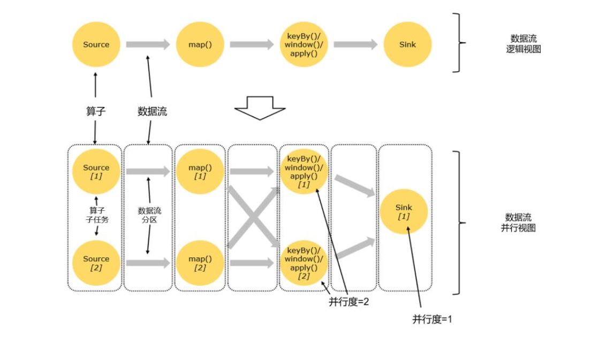
一个特定算子的子任务（subtask）的个数被称之为其并行度（parallelism）。 它需要多个分区（stream partition）来配合并执行任务
1.3.2.3 并行度设置
代码中设置
setParallelism()方法
提交应用时设置
bin/flink run -p 2 使用-p参数来指定并行度
配置文件中设置
flink-conf.yaml更改默认并行度：parallelism.default:2
在开发环境中，没有配置文件，默认并行度是当前机器CPU核心数
并行度设置方法优先级：代码中设置 > 提交应用时设置 > 配置文件中设置
1.3.3 分区策略
1.3.3.1 什么是Partition
在分布式存储中，Partition分区的概念是把数据集切分成块，每一块数据存储在不同的机器上。
对于分布式计算引擎，是将数据切分，交给位于不同物理节点上的Task计算。Flink中，就是把一个作业切分成子任务Task，将不同的数据交给不同的Task计算。
1.3.3.2 分区策略
目前Flink支持8中分区策略实现：
GlobalPartitioner
数据会被分发到下游算子的第一个实例中进行处理
使用场景：并行度降为1
ForwardPartitioner
用于在用一个Operator Chain中上下游算子之间的数据转发，实际上数据是直接传递给下游的，要求上下游并行度一样。
使用场景：一对一的数据分发，map、flatMap、filter等都是这种分区策略
ShufflePartitioner
随机将元素进行分区，可以确保下游的Task能够均匀地获得数据
dataStream.shuffle()
使用场景：增大分区、提高并行度，解决数据倾斜
RebalancePartitioner
以Round-robin（轮询调度算法）的方式为每个元素分配分区，确保下游的Task可以均匀地获得数据，避免数据倾斜。
dataStream.rebalance()
使用场景：增大分区、提高并行度，解决数据倾斜
RescalePartitioner
根据上下游Task的数量进行分区，使用Round-robin寻找下游的一个task进行数据分区。
如果上游有2 Source，下游有6个Map，那么每个 Source 会分配3个固定的下游Map，不会向未分配给自己的分区写人数据。这一点与ShufflePartitioner 和RebalancePartitioner 不同， 后两者会写入下游所有的分区。
dataStream.rescale()
使用场景：减少分区，防止发生大量的网络传输 不会发生全量的重分区
BroadcastPartitioner
将记录广播给所有分区，即有N个分区，就把数据复制N份，每个分区1份
dataStream.broadcast()
使用场景：需要使用映射表、并且映射表会经常发生变动的场景
KeyGroupStreamPartitioner
在API层面，KeyGroupStreamPartitioner应用在KeyedStream上，生成一个新的KeyedStream。
KeyedStream根据keyGroup索引编号进行分区，会将数据按照key的Hash值输出到下游算子实例中。该分区器不是提供给用户使用的。
CustomPartitioner
用户自定义分区器。需要用户自己实现Partitioner接口，来定义自己的分区逻辑。
1.3.4 算子链（Operator Chain）
1.3.4.1 算子间的数据传输
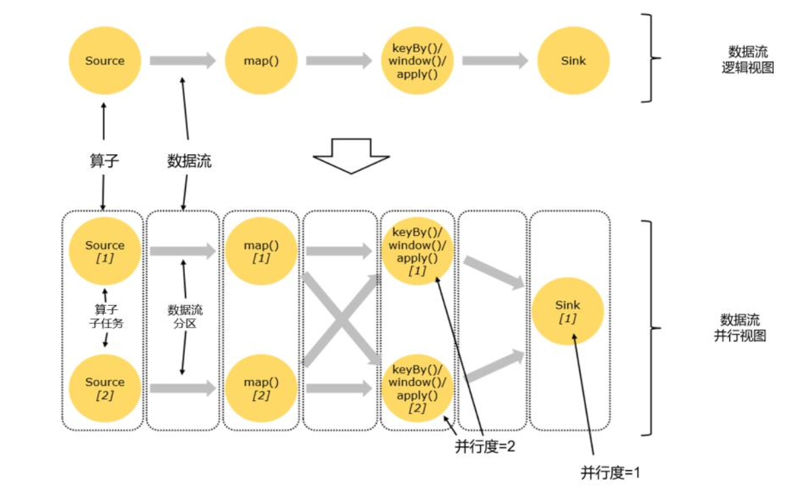
如上图所示，一个数据流在算子之间传输数据的形式可以是一对一（one-to-one）的直通（forwarding）模式，也可以是打乱的重分区（redistribute）模式
一对一（one-to-one，forwarding）
数据流维护着分区以及元素的顺序，这种one-to-one的对应关系，类似于spark中的窄依赖。
重分区（redistributing）
数据流的分区发生改变，每一个算子的子任务，会根据数据传输的策略，把数据发送到不同的下游目标任务。
例如：keyBy()是分组操作，本质上基于键（key）的哈希值（hashCode）进行了重分区。类似于spark中的shuffle。类似于spark中宽依赖。
1.3.4.2 合并算子链
在flink中，并行度相同的一对一（one to one）算子操作，可以直接链接在一起形成一个“大”的任务（task），原来的算子成为了task中的一部分。每个task会被一个线程执行，这样的技术被称为“算子链”（Operator Chain）。
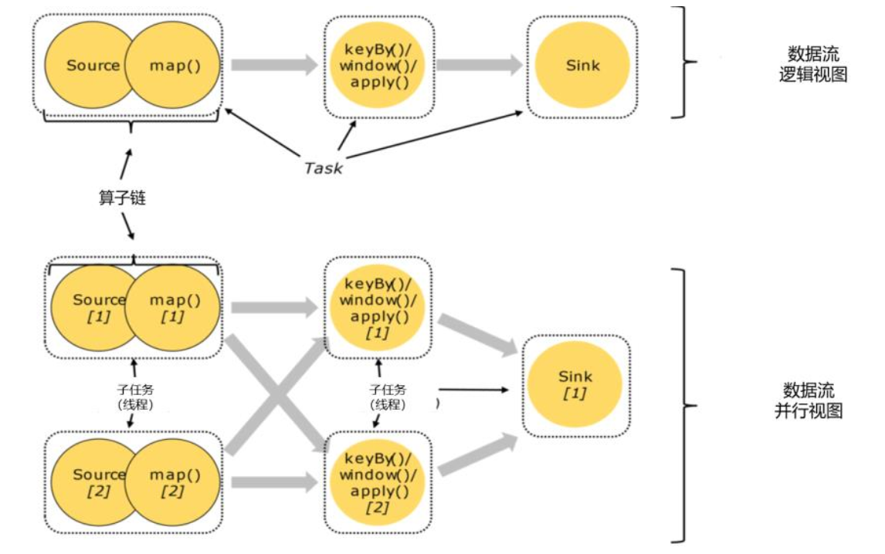
Flink为什么要有算子链这样一个设计呢？因为降算子链接成task是非常有效的优化：可以减少线程之间的切换和基于缓存区的数据交换，减少延迟的同时提升吞吐量。
1.3.5 作业图（JobGraph）与执行图（ExecutionGraph）
梳理总结一下由代码生成任务的过程，包括需要考虑并行子任务的分配、数据在任务间的传输，以及合并算子链的优化。
代码 —> 逻辑流图（StreamGraph） —> 作业图（JobGraph） —>执行图（ExecutionGraph） —>物理图（Physical Graph）
1.3.6 任务（Tasks）和任务槽（Task Slots）
1.3.6.1 什么是任务槽
任务槽（task slot）是TaskManager拥有计算资源的一个固定大小的子集，这些资源就是用来独立执行一个子任务的。
可以通过集群的配置文件来设定TaskManager的slot数量: taskmanager.numberOfTaskSlots: 8。通过调整slot数量，可以控制子任务之间的隔离级别。
slot目前仅仅用来隔离内存，不会涉及CPU隔离。在具体应用时，可以将slot数量配置为机器的CPU核心数，尽量避免不同任务之间对CPU的竞争。
1.3.6.2 任务对任务槽的共享
1.3.6.3 任务槽和并行度的关系
1.4 问题
1.4.1 Flink的一个作业是如何生成的？
理解作业是如何在Flink中表达的？
Client将作业code生成StreamGraph，描述了算子和算子之间逻辑的拓扑关系
Client将StreamGraph转换为JobGrahp：Operator chain（又称JobVertex）
- 将并不涉及到shuffle的算子进行合并
- 对于同一个operator chain里面的多个算子，会在同一个task中执行
- 对于不在同一个operator chain里的算子，会在不同的task中执行
Client中的ClusterClient将JobGraph提交给Dispatcher，Dispatcher根据JobGraph创建相应的JobMaster并运行起来
JobMaster将JobGraph转换为ExecutionGraph
逻辑图JobVertex中的一个节点，会对应着并发数个执行节点ExecutionVertex，节点对应着一个个任务，这些任务最后会作为实体部署到Worker节点上，并执行实际的数据处理业务逻辑。
JobMaster将ExecutionGraph转换为物理执行计划（可执行）
2.DataStream API
3.时间与窗口
3.1 水位线
3.1.1 Flink中有几种时间语义
（1）处理时间（Processing Time）
处理时间指执行处理操作的机器系统时间
（2）事件事件（Event Time）
事件时间，是指每个事件在对应设备上发生的事件，也就是数据生成的时间
3.1.2 什么是watermark？
在事件时间语义下，我们不依赖系统时间，而是基于数据自带的时间戳去定义一个时钟，用来表示当前时间的进展。并且这个时钟以数据的形式传递出去，告诉下游任务当前时间的进展；而且这个时钟的传递不会因为窗口聚合之类的运算而停滞。
做法是在数据流中加入一个时钟标记，记录当前事件时间；这个标记可以直接广播到下游，当下游任务收到这个标记，就可以更新自己的时钟了。
在Flink中，用来衡量事件事件（Event Time）进展的标记，被称作“水位线”Watermark
具体实现，水位线可以看作一条特殊的数据记录，它是插入到数据流中的一个标记点，主要内容就是一个时间戳，用来指示当前的事件时间。而它插入流中的位置，就应该是在某个数据到来之后；这样就可以从这个数据中提取时间戳，作为当前水位线的时间戳了。
3.1.3 水位线是如何处理乱序数据的？
乱序数据：在分布式系统中，数据在节点间传输，会因为网络传输延迟的不确定性，导致顺序发生改变。
简单处理：每来一个数据就提取它的时间戳、插入一个水位线，但是乱序数据，可能新的时间戳比之前的还小，那么插入新的水位线时，先判断一下时间戳是否比之前的大，否则就不再生成新的水位线。考虑到大量数据同时到来的处理效率，必须得周期性地生成水位线，解决方法是保存一下之前所有数据的最大时间戳，需要插入水位线时，就直接以它为时间戳生成新的水位线。
如何正确处理“迟到”的数据：用当前已有数据最大时间戳减去延迟时间比如2秒，就是要插入的水位线的时间戳
水位线 = 观察到的最大事件时间 - 最大延迟时间 - 1毫秒
3.1.4水位线的特性？
- 水位线是插入到数据流中的一个标记， 可以认为是一个特殊的数据
- 水位线主要的内容是一个时间戳，用来表示当前事件时间的进展
- 水位线是基于数据的时间戳生成的
- 水位线的时间戳必须单调递增，以确保任务的事件时间时钟一直向前推进
- 水位线可以通过设置延迟，来保证正确处理乱序数据
- 一个水位线 Watermark(t)， 表示在当前流中事件时间已经达到了时间戳 t, 这代表 t 之前的所有数据都到齐了，之后流中不会出现时间戳 t’ ≤ t 的数据
3.1.5 水位线是如何传递的？
如果下游有多个并发子任务：当前水位线，广播给所有的下游子任务
重分区的传输模式，一个任务有可能会收到来自不同分区上游子任务的数据，取上游子任务最小水位线
3.1.6 如何生成水位线？
.assignTimestampsAndWatermarks()，主要用来为流中的数据分配时间戳，并生成水位线来指示事件时间。传入一个WatermarkStrategy作为参数，这就是所谓的“水位线生成策略”
WatermarkStrategy：
TimestmpAssiger：主要负责从流中数据元素的某个字段中提取时间戳，并分配给元素。时间戳的分配是生成水位线的基础。
WaterMarkGenerator：基于时间戳生成水位线
- onEvent() ：每个事件数据到来都会调用的方法，它的参数有当前事件、时间戳
- onPeriodicEmit()：周期性调用的方法，可以由WatermarkOutput()发出水位线，周期时间为处理时间，可以调用环境配置的.setAutoWatermarkInterval()方法来设置，默认为200ms。
Flink内置水位线生成器：
有序流：WatermarkStrategy.
乱序流：WatermarkStrategy.
3.2 窗口
3.2.1 窗口的理解
把窗口理解成一个“桶”，窗口可以把流切割成有限大小的多个“存储桶（bucket）”；每个数据都会分发到对应的桶中，当到达窗口结束时间时，就对每个桶中收集的数据进行计算处理。
Flink中窗口并不是静态准备的，而是动态创建，当有落在这个窗口区间范围的数据到达时，才创建对应的窗口。到达窗口结束时间时，窗口就触发计算并关闭。
3.2.2 窗口分类，都有哪些窗口
（1）按照驱动类型分类：以什么标准来开始和结束数据的截取
- 时间窗口：按照时间段截取数据
- 计算窗口：按照固定个数，来截取一段数据集
（2）按照窗口分配数据的规则分类
滚动窗口（Tumbling Window）
滚动窗口有固定大小，是一种对数据进行“均匀切片”的划分方式。窗口之间没有重叠，也不会有间隔，是“首尾相接”的状态。
可以基于时间定义，也可以基于数据定义；需要的参数只有一个，就是窗口大小（window size）
滑动窗口（Sliding Window）
滑动窗口的大小也是固定的，窗口之间并不是首尾相接的，而是可以“错开”一定的位置
定义滑动窗口有2个参数：窗口大小（window size）、滑动步长（window slide）
会话窗口（Session Window）
基于“会话”session来对数据进行分组的。数据来了之后就开启一个会话窗口，如果接下来还有数据陆续到来，那么就一直保持会话；如果一段时间一直没收到数据，那就认为会话超时失效，窗口自动关闭。
全局窗口（Global Window）
把相同key的所有数据分配到同一个窗口中，说直白一点，就跟没分窗口一样。无界流的数据永无止尽，所以这种窗口也没有结束的时候，默认是不会做触发计算的。如果希望它能对数据进行计算处理，还需要自定义“触发器”（Trigger）。
3.2.3 迟到的数据的处理
（1）设置水位线延迟时间
水位线是整个应用的全局逻辑时钟。水位线生产之后，会随着数据在任务间流动，从而给每个任务指明当前事件时间。水位线的延迟主要是用来对付分布式网络传输导致的数据乱序，而网络传输的乱序程度一般不会很大，大多集中在几毫秒～几百毫秒，一般设置毫秒～秒级
（2）允许窗口处理迟到数据
大部分乱序数据已经被水位线的延迟等到了，所以往往迟到的数据不会太多。在水位线到达窗口结束时间时，先快速输出一个近似正确计算结果；然后保持窗口继续等待到延迟数据，每来一条数据，窗口就会再次计算，并将更新后的结果输出。这样可以逐步修改计算结果，最终得到准确的统计值
（3）将迟到数据放入窗口侧输出流
用窗口的侧输出流来收集关窗以后的迟到数据，将之前的窗口计算结果保存下来，然后获取侧输出流中的迟到数据，判断数据所属窗口，手动对结果进行合并更新。
3.2.4 水位线是如何传递的？
如何理解flink的watermark，当水位线涨到window 的 endTime时，如果后续还有数据过来，窗口还会继续被触发吗？
当水位线到达窗口结束时间时，窗口就会闭合不再接收迟到的数据，因为根据水位线的定义，所有小于等于水位线的数据都已经到达，所以显然Flink会认为窗口中的数据都到达了（尽管可能存在迟到数据，也就是时间戳小于当前水位线的数据）
3.2.5 海量Key去重
怎么去重？考虑一个实时场景：双十一场景，滑动窗口长度为 1 小时，滑动距离为 10 秒钟，亿级用户，怎样计算 UV？
使用set数据结构或者redis的set显然不行的，因为可能有上亿个key，内存放不下。可以考虑布隆过滤器（Bloom Filter）来去重。
布隆过滤器的原理：当一个元素被加入集合时，通过K个散列函数将这个元素映射成一个位数组的K个点，把它们置为1。检索时，只要看这些点是不是都是1就大约知道集合中有没有它了，如果这些点有任何一个0，则被捡元素一点不在，如果都是1，则被捡元素很可能在。
4.多流转换
5. 状态编程
5.1 状态机制
5.1.1 说一下Flink状态机制？
Flink内置的很多算子，包括source，sink都是有状态的。在Flink中，状态始终与特定算子相关联。Flink会以checkpoint的形式对各个任务的状态进行快照，用于保证故障恢复时的状态一致性。
5.1.2 什么是状态？
每个任务进行计算处理时，可以基于当前数据直接转换得到输出结果；也可以依赖一些其他数据。这些由一个任务维护，并且用来计算输出结果的所有数据，就叫做这个任务的状态。
算子任务可以分为无状态和有状态，无状态算子，如map、filter、flatMap，计算时不依赖其他数据。
有状态算子，如sum，需要保存之前所有数据的和
5.1.3 有状态算子一般处理流程
- 算子任务接收到上游发来的数据
- 获取当前状态
- 根据业务逻辑进行计算，更新状态
- 得到计算结果，输出发送到下游任务
5.1.4 状态分类
托管状态（Managed State）
由Flink统一管理，状态的存储访问、故障恢复和重组等一系列问题都由Flink实现
算子状态（Operator State）
状态作用范围限定为当前的算子任务实例，也就是只对当前并行子任务实例有效
（1）列表状态（ListState）
（2）联合列表状态（UnionListState）
（3）广播状态（BroadcastState）
按键分区状态
状态是根据输入流中定义的键（key）来维护和访问的，所以只能定义在按键分区流（KeyedStream）中，也就keyBy之后才可以使用
（1）值状态（ValueState）
（2）列表状态（ListState）
（3）映射状态（MapState）
（4）归约状态（ReducingState）
（5）聚合状态（AggregatingState）
原始状态（Raw State）
自定义，开辟一块内存，自己管理，实现状态的序列化和故障恢复
6.容错机制
6.1 Checkpoint机制
6.1.1 什么是checkpoint
Flink为了达到容错和exactly-once语义的功能，定期将state持久化下来，这个过程叫做checkpoint，它是flink job在某一个时刻全局状态的快照。
6.1.2 如何实现一个分布式系统的全局状态保留功能
checkpoint在flink中引入了Barrier流，定时向数据流中发送Barrier（分界线）。
实例分析：
举例一个简单的ETL过程：
source、trans、sink三个算子，source和sink都是kafka，operator之间没有chaining，通过forward strategy分组
- 数据从kafka中抽过来
- 进行一个trans的转换操作
- 再发送到一个下游的kafka
- 当设置parallism=2时
Checkpoint分析过程：
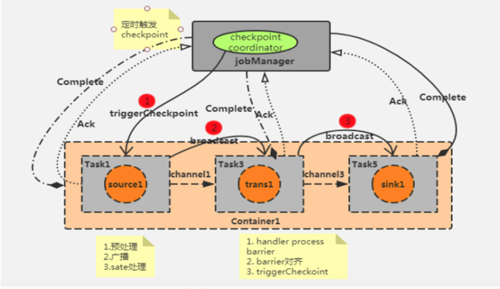
每个Flink作业都会产生一个JobManager，JobManager里面又会有一个checkpoint coordinator来管理整个checkpoint的过程，可以设置一个时间间隔让checkpoint coordinator将一个checkpoint的事件发送给每一个Container中的source task，也就是第一个任务。
当某个source算子收到一个barrier时，暂停自身的数据处理，将自己的当前state制作成snapshot（快照），并保存到指定的持久化存储中，最后向checkpoint coordinator异步发送一个ack（acknowledge character）确认字符，同时向自身所有下游算子广播该barrier后恢复自身的数据。
每个算子按照上面不断制作snapshot并向下游广播，直到最后barrier传递到sink算子，此时快照便制作完成。
需要注意：上游算子可能是多个数据源，对应多个barrier，需要全部到齐才一次性触发checkpoint，即对齐。所以在遇到checkpoint时间较长的情况时，有可能是因为数据对齐需要消费的事件比较长所造成的。
6.1.3 Flink中exactly once和at least once checkpoint的时候有什么区别
exactly once（精准一次）Barrier对齐
在多并行度下，同一时间可以来源于多个不同快照的多个barrier分界线，如果想要实现精准一次性，需要使用barrier对齐，以便当前快照能够包含消费多个输入流barrier之前（但不超过）的所有envents而产生的状态。
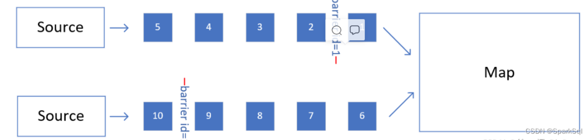
上游有两个并行度，中间都被source task插入了barrier，目的地是下游的map task。
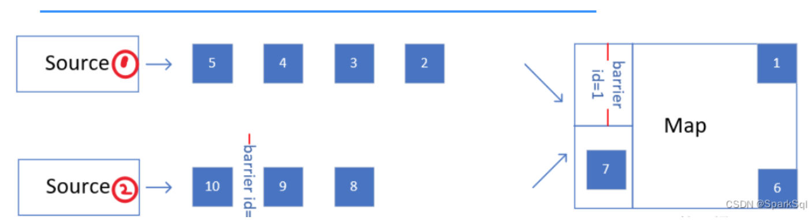
随着数据的流动，source1的barrier已经进入Map中，此时因为规则是barrier对齐，map需要等待source2的barrier也到达，才可以做快照。并且为了保证barrier可以划分出明确的前后两部分，在等待source2的barrier到来的过程中，source1流到map的数据不会被处理，先放到一个缓存区内，等到barrier对齐之后，再把他们读出来处理。
at least once（至少一次） Barrier不对齐
在恢复故障时，需要使用最新的、完整的checkpoint，如果不用等对齐，就可以向下流动，这个时候要是恢复故障，因为barrier id=n不完整，这个checkpoint不可用，要用之前的完整的checkpoint，存在重复处理的数据。
6.1.4 checkpoint制作的snapshot快照存储方式有哪些？
Flink主要提供了2中检查的存储方式：
JobManagerCheckpointStorage作业管理器的堆内存
默认情况，检查点存储在JobManager的堆（heap）内存中。
FileSystemCheckpointStorage文件系统
检查点配置可以使用.setCheckpointStrorage()来设置
xxxxxxxxxx41// 配置存储检查点到JobManager堆内存2env.getCheckpointConfig().setCheckpointStorage(new JobManagerCheckpointStorage());3// 配置存储检查点到文件系统4env.getCheckpointConfig().setCheckpointStorage(new FileSystemCheckpointStorage("hdsf://namenode:40010/flink/checkpoints"));6.1.5 checkpoint相关配置
xxxxxxxxxx191StreamExecutionEnvironment env = StreamExecutionEnvironment.getExecutionEnvironment();2
3// 启动检查点，间隔时间1秒4env.enableCheckpointing(1000);5Checkpoint checkpointConfig = env.getCheckpointConfig();6// 设置精确一次模式7checkpointConfig.setCheckpointMode(CheckpointingMode.EXACTLY_ONCE);8// 最小间隔时间500毫秒，最快等多久可以发出保存下一个检查点的指令9checkpointConfig.setMinPauseBetweenCheckpoints(500);10// 超时时间1分钟，超时没完成就会被丢弃掉11checkpointConfig.setCheckpointTimeout(60000);12// 同时只能有一个检查点13checkpointConfig.setMaxConcurrentCheckpoints(1);14// 开启检查点的外部持久化保存，作业取消后依然保留15chcekpointConfig.enableExternalizedCheckpoints(ExternalizedCheckpointCleanup.RERAIN_ON_CANCELLATION);16// 启用不对齐的检查点保存方式17checkpointConfig.enableUnlignedCheckpoints();18// 设置检查点存储，可以直接穿入一个string，指定文件系统的路径19checkpointConfig.setCheckpointStorage("hdfs://my/checkpoint/dir")6.1.6 从检查点恢复状态的具体步骤？
重启应用
遇到故障之后，第一步就是重启。应用重启后，所有任务的状态会清空
读取检查点，重置状态
找到最近一次保存的检查点，从中读取出每个算子任务状态的快照，分别填充到对应的状态中
重放数据
如果直接继续处理数据，那么保存检查点之后、到发生故障这段时间内的数据，就相当于丢掉了；会造成计算结果错误。
为了不丢数据，应该从保存检查点后开始重新读取数据，可以通过Source任务向外部数据源 重新提交偏移量（offset）来实现。
继续处理数据
6.1.7 检查点算法—基于Chandy-Lamport算法的分布式快照**
实现的目标是，在不暂停流处理的前提下，让每个任务“认出”触发检查点保存的那个数据。
在数据流中插入一个特殊的数据结构（Checkpoint Barrier），专门用来表示触发检查点保存的时间点，收到保存检查点的指令后，Source任务可以在当前数据流中插入这个结构，之后的所有任务只要遇到它就开始对状态做持久化快照保存。
6.1.8 分布式快照算法—异步分界线快照（asynchronous barrier snapshotting）
算法的核心就是2个原则：当上游任务向多个并行任务发送barrier时，需要广播出去；而多个上游任务向同一个下游任务传递barrier时，需要在下游执行“分界线对齐”（barrier alignment）操作，也就是需要等到所有并行分区的barrier都到齐，才可以开始状态的保存。
6.2 exactly-onec精确一次
6.2.1 状态一致性（状态 Exactly-once）
对于Flink来说，一致性指的是多个节点并行处理不同的任务，我们要保证计算结果是正确的，就必须不漏掉任何一个数据，而且也不会重复处理同一个数据。
exactly-once要求数据不丢，需要有数据重放机制来保证这一点，Flink使用的是一种轻量级快照机制—检查点（checkpoint）来保证exactly-once语义。
6.2.2 端到端一致性（端到端 Exactly - once）
完整的流处理应用，包括数据源、流处理器和外部存储系统三个部分。
输入端
外部数据源必须拥有重放数据的能力，像Kafka
流处理
检查点机制可以保证故障恢复后数据不丢失，并且只处理一次，可以做到exactly-once一致性语义
输出端
输出端最大的问题是“覆水难收”，写入到外部系统的数据难以撤回，那怎样可以收回一条写入的数据呢？
能够保证exactly-once一致性写入方式有2种：幂等写入和事务写入
幂等（idempotent）写入
一个操作可以重复执行很多次，但只导致一次结果更改，后面再重复执行就不会对结果起作用。
Redis中键值存储、Mysql
出现短暂不一致
事务（transactional）写入
事务是应用程序中一系列严密的操作，所有操作必须成功完成，否则在每个操作中所做的所有更改都会被撤销。事务有4个基本特性：原子性（Atomicity）、一致性（Correspondence）、隔离性（Isolation）、持久性（Durability） ACID
当Sink任务遇到barrier时，开始保存状态的同时开启一个事务，接下来所有数据的写入都在这个事务中；待到当前检查点保存完毕时，将事务提交，所有写入的数据就真正可用了。如果中间过程出现故障，状态会回退到上一个检查点，而当前事务没有正常关闭（因为当前检查点没有保存完），所以会回滚，写入到外部的数据就被撤销了
预写日志（write-ahead-log，WAL）
（1）先把结果数据作为日志（log）状态保存起来
（2）进行检查点保存时，也会将这些结果数据一并做持久化存储
（3）在收到检查点完成的通知时，将所有结果一次性写入外部系统
DataStream API提供了一个模板类GenericWriteAheadSink，来实现这种事务型的写入方式
缺点：如果检查点已经成功保存、数据也成功地一批写入到外部系统，但是最终保存确认信息时出现故障，Flink最终还是会认为没有成功写入。于是发生故障时，不会使用这个检查点，而是需要回退到上一个，这样就会导致这批数据的重复写入。
两阶段提交（2PC）
（1）当第一条数据到来时，或者收到检查点的分界线时，Sink任务都会启动一个事务
（2）接下来接收到的所有数据，都通过这个事务写入外部系统；这是由于事务没有提交，所以数据尽管吸入了外部系统，但是不可用，是“预提交”的状态
（3）当Sink任务收到JobManager发来检查点完成的通知时，正式提交事务，写入的结果就真正可用了
6.2.3 如果下级存储不支持事务，Flink怎么保证exactly-once？
端到端的exactly-one对sink要求比较高，具体实现主要有幂等写入和事务性写入两种方式。密等写入的场景依赖于业务逻辑，更常见的是用事务性写入。而事务性写入又有预写日志（WAL）和两阶段提交（2PC）两种方式。
如果外部系统不支持事务，那么可以用预写日志的方式，把结果数据先当成状态保存，然后再收到checkpoint完成通知时，一次性写入sink系统。
6.3 问题总结
6.3.1 Flink作业在很多情况下有可能失败，失败之后重新运行时，是如何保证数据一致性的？
Flink基于Chandy-Lamport算法，会把分布式的每个节点的状态保存到分布式系统里面作为Checkpoint（检查点），过程大致如下：
- 从数据源端开始注入Checkpoint Barrier，它是一种比较特殊的信息
- 它会跟普通的事件一样随着数据流去流动，当Barrier到达算子之后，这个算子会把它当前的本地状态进行快照保存，当Barrier流动到Sink，所有的状态都保存完整之后，它就形成一个全局的快照。
- 当作业失败之后，就可以通过远程文件系统里保存的Chenkpoint进行回滚：先把Source会滚到Checkpoint记录的offset，然后把有状态节点当时的状态会滚到对应的事件点，进行重新计算。这样既可以不用从头开始计算，又能保证数据语义的一致性。
7.Flink SQL
7.1 API
Table API和SQL可以看作联合在一起的一套API，程序处理中，输入数据可以定义成一张表，然后对这张表进行查询，得到新的表，相当于数据流的转换操作。最后定义一张用于输出的表。
7.1.1 程序架构
程序基本架构：
xxxxxxxxxx121// 创建表环境2TableEnvironment tableEnv = ...;3// 创建输入表，连接外部系统读取数据4tableEnv.executeSql("CREATE TEMPORARY TABLE inputTable ... WITH('connector = ...')");5// 注册一个表，连接到外部系统，用于输出6tableEnv.executeSql("CREATE TEMPORARY TABLE outputTable ... WITH('connector = ...')");7// 执行SQL对表进行查询转换，得到一个新的表8Table table1 = tableEnv.sqlQuery("SELECT ... FROM inputTable...");9// 使用Table API对表进行查询转换，得到一个新的表10Table table2 = tableEnv.from("inputTable").select(...);11// 将得到的结果写入输出表12TableResult tableResult = table.executeInsert("outputTable");通过执行DDL直接创建一个表，执行CREATE语句中用WITH指定外部系统的连接器，就可以连接外部系统读取数据了。直接用SQL语句实现全部的流处理过程。
7.1.2 表环境TableEnvironment
Flink在使用Table API和SQL需要一个特别的运行时环境，这就是所谓的“表环境（TableEnvironment）”，它主要负责：
注册Catalog和表
这里的Catalog就是“目录”，与标准SQL中的概念一致，主要用来管理所有数据库（database）和表（table）的元数据（metadata）。
在表环境中可以由用户自定义Catalog，并组册表和自定义函数（UDF）。
执行SQL查询
注册用户自定义函数（UDF）
DataStream和表之间的转换
使用默认配置创建表环境：
xxxxxxxxxx61import org.apache.flink.streaming.api.environment.StreamExecutionEnvironment;2import org.apache.flink.table.api.EnvironmentSettings;3import org.apache.flink.table.api.bridge.java.StreamTableEnvironment;4
5StreamExecutionEnvironment env = StreamExecutionEnvironment.getExecutionEnvironment();6StreamTableEnvironment tableEnv = StreamTableEnvironment.create(env);
7.1.3 创建表
创建表的方式，有连接器（connector）和虚拟表（virtual tables）2种。
连接器表（Connector Tables）
通过连接器（connector）连接到一个外部系统，然后定义出对应的表结构。对表的读写就可以通过连接器转换成对外部系统的读写了。
xxxxxxxxxx11tableEnv.executeSql("CREATE [TEMPORARY] TABLE MyTable ... WITH ('connector = ...)")虚拟表（Virtual Tables）
调用表环境的sqlQuery()方法，直接传入一条SQL语句作为参数执行查询，得到一个Table对象。
xxxxxxxxxx11Table newTable = tableEnv.sqlQuery("SELECT ... FROM MyTable...")得到的newTable是一个中间转换结果，如果希望直接使用这个表执行SQL，需要将这个中间结果表注册到环境中。
xxxxxxxxxx11tableEnv.createTemporaryView("NewTable", newTable);
7.1.4 表和流转换
将表转换成流（Table—>DataStream）
调用toDataStream()方法
xxxxxxxxxx11tableEnv.toDataStrem(visitTable).print();调用toChangelogStream()方法
对于有更新操作的表，进行打印输出，会抛出TableException异常，因为print本身可以看作一个Sink操作，打印输出的Sink操作不支持数据进行更新。解决方法是不要转换成DataStream打印输出，而是记录它的“更新日志”（change log），变成一条更新日志的流，就可以打印输出了。
xxxxxxxxxx11tableEnv.toChangelogStream(urlContTable).print();
将流转换成表（DataStream—>Table）
调用fromDataStream()方法
xxxxxxxxxx11Table eventTable = tableEnv.fromDataStream(eventStream, $("timestamp").as("ts"), $("url"));由于流中的数据本身就是定义好的POJP类型Event，将流转换成表之后，每一行数据就对应着一个Event，而表中的列名就对应着Event中的属性。
调用createTemporaryView()方法
如果希望直接在SQL中引用这张表，可以调用createTemporaryView()方法来创建虚拟视图
xxxxxxxxxx11tableEnv.createTemporaryView("EventTable", eventStream, $("timestamp").as("ts"), $("url"));调用fromChangelogStream()方法
将一个更新日志流转换成表。
7.1.5 支持的数据类型
DataStream中支持的数据类型，Table也都支持
原子类型
Integer、Double、String
原子类型不做重命名时，默认的字段名“f0”，将原子类型看作了一元组Tuple1的处理结果。
Tuple类型
表中字段默认是元组中元素的属性名f0、f1、f2...
xxxxxxxxxx71// 将数据流转换成只包含 f1 字段的表2Table table = tableEnv.fromDataStream(stream, $("f1"));3// 将数据流转换成包含 f0 和 f1 字段的表，在表中 f0 和 f1 位置交换4Table table = tableEnv.fromDataStream(stream, $("f1"), $("f0"));5// 将f1 字段命名为 myInt， f0 命名为 myLong6Table table = tableEnv.fromDataStream(stream, $("f1").as("myInt"),7$("f0").as("myLong"));POJO类型
将 POJO 类型的 DataStream 转换成 Table，如果不指定字段名称，就会直接使用原始 POJO 类型中的字段名称
Row类型
Row 类型也是一种复合类型，它的长度固定，而且无法直接推断出每个字段的类型，所以在使用时必须指明具体的类型信息
创建 Table 时调用的 CREATE语句就会将所有的字段名称和类型指定，这在 Flink 中被称为表的“模式结构”（ Schema）。除此之外， Row 类型还附加了一个属性 RowKind，用来表示当前行在更新操作中的类型。这样，Row 就可以用来表示更新日志流（ changelog stream）中的数据。
xxxxxxxxxx81DataStream<Row> dataStream =2env.fromElements(3Row.ofKind(RowKind.INSERT, "Alice", 12),4Row.ofKind(RowKind.INSERT, "Bob", 5),5Row.ofKind(RowKind.UPDATE_BEFORE, "Alice", 12),6Row.ofKind(RowKind.UPDATE_AFTER, "Alice", 100));7// 将更新日志流转换为表8Table table = tableEnv.fromChangelogStream(dataStream);
7.2 流处理中的表
7.3 时间属性和窗口
7.3.1 时间
7.3.2 窗口
7.3.2.1 窗口表值函数（Windowing TVFs，新版本）
从1.13版本开始，Flink开始使用窗口表值函数（Windowing table-valued functions，Windowing TVFs）来定义窗口。
目前Flink提供了以下几个窗口TVF：
滚动窗口（Tumbling Windows）
长度固定、时间对齐、无重叠的窗口，一般用于周期性的统计计算
TUMBLE(TABLE EventTable, DESCRIPTOR(ts), INTERVAL '1' HOUR)
滑动窗口（Hop Windows，跳跃窗口）
设置滑动步长来控制统计输出的频率
HOP(TABLE EventTable, DESCRIPTOR(ts), INTERVAL '5' MINUTES, INTERVAL '1' HOURS)
基于时间属性ts，在表EventTable上创建了大小为1小时的滑动窗口，每5分钟滑动一次。
累积窗口（Cumulate Windows）
场景：统计周期较长，希望中间每隔一段时间就输出一次当前的统计值；与滑动窗口不同的是，在一个统计周期内，会多次输出统计值，应该是不断叠加累积的。
例如：按天统计网站的PV，每隔1小时输出一次当天到目前为止的PV值。
CUMULATE(TABLE EventTable,DESCRIPTOR(ts), INTERVAL '1' HOURS, INTERVAL '1' DAYS)
两个核心参数：最大窗口长度（max window size）和累积步长（step）
会话窗口（Session Windows，目前尚未完全支持）
7.4 聚合
7.4.1 窗口聚合
使用窗口TVF实现分组窗口的聚合：
xxxxxxxxxx71select user,2 window_end as endT,3 count(url) as cnt4from TABLE(5 TUMBLE(TABLE EventTable, DESCRIPTOR(ts), INTERVAL '1' HOUR)6)7group by user, window_start, window_end以ts作为时间属性字段、基于EventTable定义了1小时的滚动窗口，统计出每小时每个用户点击url的次数。分组字段是用户名user，表示窗口的window_start、window_end
7.4.2 开窗聚合
具体实例：
xxxxxxxxxx31select user, ts,2 count(url) over(partition by user order by ts range between interval '1' HOUR preceding and current row) as cnt3from EventTable以ts作为时间属性字段，对EventTable中的每行数据都选取它之前1小时的所有数据进行聚合，统计每个用户访问url的总次数，并重命名为cnt。
使用window字句在select外部单独定义一个over窗口：
xxxxxxxxxx71select user, ts,2 count(url) over w as cnt,3 max(char_length(url)) over w as max_url4from EventTable5window w as(6 partition by user order by ts rows between 2 preceding and current row7)定义了选取前2行数据的over窗口，并重命名为w；接下来可以基于它调用多个聚合函数，扩展出更多的列提取出来。
7.4.3 窗口TopN
xxxxxxxxxx151select *2from3(4 select *,5 row_number() over(partition by window_start, window_end order by cnt desc) as row_num6 from7 (8 select window_start, window_end, user, count(url) as cnt9 from TABLE(10 tumble(table EventTable, descriptor(ts), interval '1' hour)11 )12 group by window_start, window_end, user13 ) as t14) as t15where row_num <= 2
7.5 Join
Flink双流Join主要分为两大类，一类是基于原生State的Connect算子操作，另一类是基于窗口Join操作。其中给予窗口的Join可细分为Window join 和Interval join两种。
7.5.1 双流Join（Regular Join）
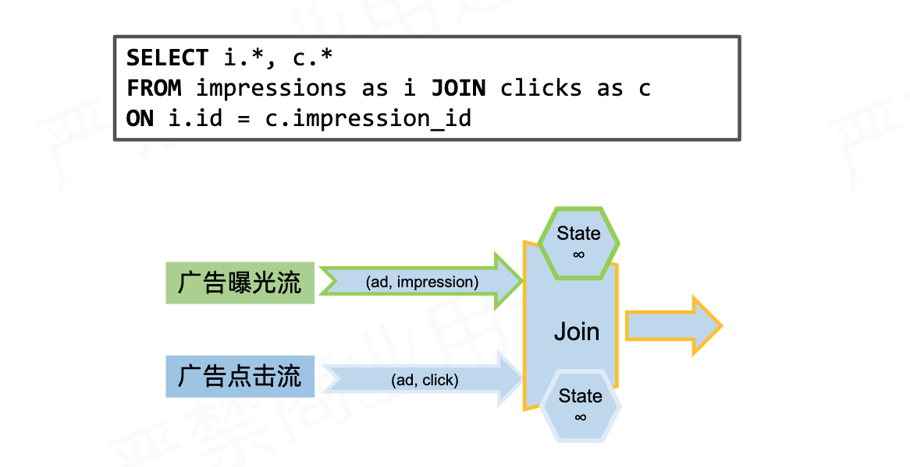
Join机制实现原理：依赖Flink的State状态存储，通过将数据存储到State中进行关联join，最终输出结果。
支持Inner join、left join、right join、full outer join
语法，语义均和传统SQL一致
左右流都会触发结果更新
状态持续增长，一般结合state TTL使用
configuration.setString("table.exec.state.ttl", "1h")
7.5.2 Window Join
利用Flink的窗口机制实现双流Join，将两条实时流中元素分配到同一个时间窗口中完成Join。
底层原理：两条实时流数据缓存在Window State中，当窗口触发计算时，执行join操作

7.5.2 区间Join（Interval Join）
7.5.3 时态表 Join（Temproal Join）
7.5.4 自定义函数 UDTF
8.压测与监控
8.1 Flink反压机制
8.1.1 Flink数据交换
Flink的数据交换有3种：
同一个Task的数据交换
通过算子链operator chain串联多个算子，主要作用是避免序列化和网络通信的开销。
算子链operator chain串联多个算子的条件：
- 上下游的并行度一致
- 下游节点的入度为1
- 上下游节点共享同一个slot
- 下游节点的chain策略为ALWAYS（例如map、flatmap、filter等默认是ALWAYS）
- 上游节点chain策略为ALWAYS或HEAD（source默认是HEAD）
- 两个节点间数据分区方式是forward
- 用户没有禁用chain
不同Task同JVM下的数据交换
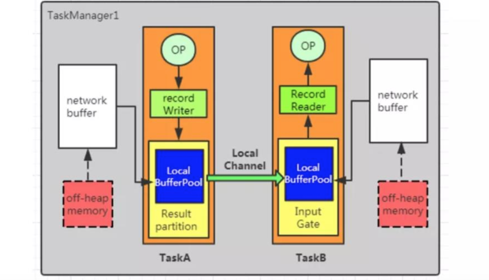
在TaskA中，算子输出的数据首先通过record Writer进行序列化，然后传递给result Partition。接着，数据通过local channel传递给TaskB的input Gate，然后传递给record reader进行反序列。
不同Task且不同TaskManager之间的交换
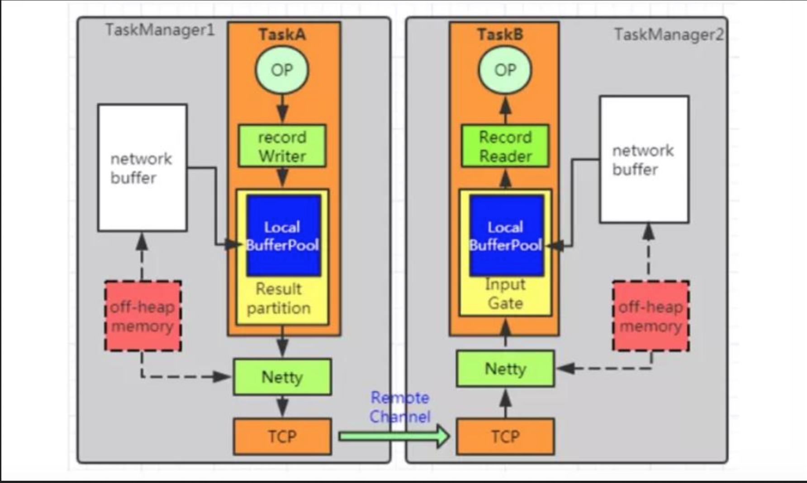
与上述2不同点是数据先传递给netty，通过netty把数据推送到远程段的task。
8.1.2 Flink的Credit-based反压机制
在Flink层面实现反压机制，通过ResultPartition和InputGate传输feedback。
Credit-base的feedback步骤：
每一次ResultPartition向InputGate发送数据的时候，都会发送一个backlog size告诉下游准备发送多少消息，下游就会计算游多少Buffer去接收消息。（backlog的作用是为了让消费端感知到我们生产端的情况）
如果下游有充足的Buffer，就会返还给上游Credit（表示剩余buffer数量），告知发送消息（图上两个虚线是采用Netty和Socket进行通信）。
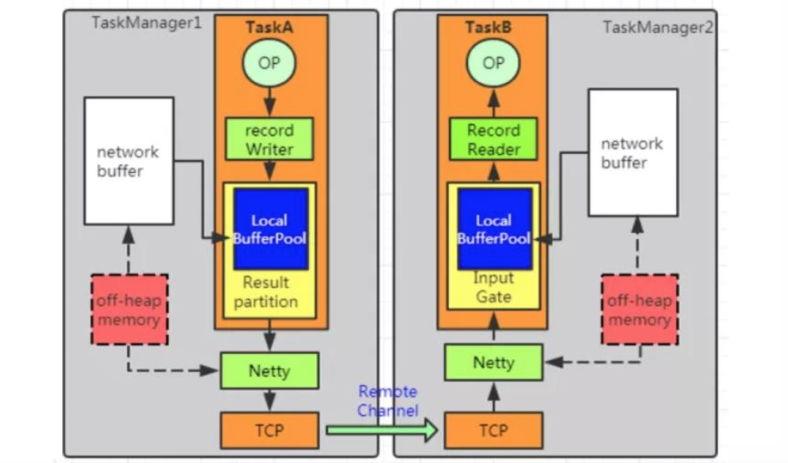
生成段发送backlog = 1
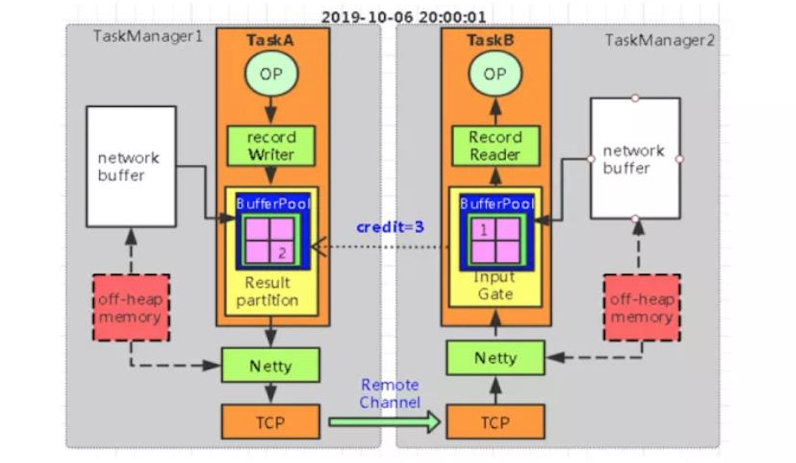
消费端返回credit = 3
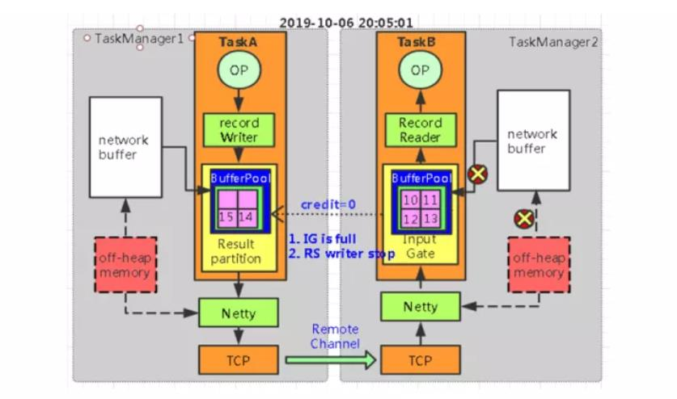
当生产端用完buffer， 返回credit = 0
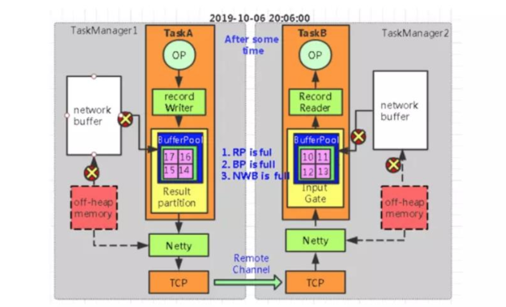
生产端也出现了数据积压
8.1 怎么做压力测试和监控？
一般碰到的压力来自以下几个方面：
- 产生数据流速度如果过快，而下游的算子消费不过来的话，会产生背压。背压的监控可以使用Flink Web UI来可视化监控，一旦报警就能知道。一般情况下背压问题的产生可能是由于sink这个操作符没有优化好，做一下优化就可以，比如如果写入ElasticSearch，那么可以改成批量写入，可以调大ElasticSearch队列的大小等策略。
- 设置watermark的最大延迟时间这个参数，如果设置的过大，可能会造成内存的压力。可以设置最大延迟时间小一些，然后把迟到元素发送到侧输出流中去。晚一点更新结果。或者使用类似RocksDB这样的状态后端，RocksDB会开辟堆外存储空间，但IO速度会变慢，需要权衡。
- 还有就是滑动窗口的长度如果过长，而滑动距离很短的话，Flink的性能会下降的很厉害。主要通过时间分片的方法，将每个元素只存入一个“重叠窗口”，这样可以减少窗口处理中状态的写入。
9. 实时数仓
9.1 事实数仓案例
9.1.1 菜鸟仓配实时数据仓库
1.实时数仓的架构是什么样的？
实时数仓采用Lambda架构，相对比于Kappa架构，他的优点是灵活性高、容错性高、成熟度高和迁移成本低；缺点是实时、离线数据用两套代码，可能存在一个口径修改了，另一个没改的问题
实时计算引擎采用Flink，Flink具有Exactly-once的准确性、轻量级Checkpoint容错机制、低延时高吞吐和易用性高的特点。
实时存储引擎采用的redis，ClickHouse是比较好的选择，实时存储引擎要求有维度索引、支持高并发、预聚合、高性能事实多维OLAP查询。
1.事实数仓是如何建设的，都有哪些数据
Flink SQL维表关联
从0-1处理过多少亿级别的数据 具备设计、调优能力，数据治理
实时 1.整体设计
数据应用：实时大屏、实时运营、推荐系统 数据服务层：日志服务SLS、Redis 数据计算：Flink 数据模型：dwd实时明细层、dwm轻度汇总层、dws高度汇总层
业务系统、埋点数据
2.数据模型 实时明细层 数据清洗 多流join 解决方案：数据延迟如何解决 输出实时明细数据到kafka
实时计算主要是订阅业务消息队列SLS，通过数据清洗ETL，多流join，多数据源join，流式实时数据和静态离线维度数据进行关联组合，将一些相同粒度的业务系统 维度表中维度属性全部关联在一起，做维度退化，增加数据的易用性和服用性，最终得到实时明细数据，将这些数据分成两个分支，一个分支落到CK，支持明细查询使用，一个分支发送到消息队列SLS中供下一层使用
汇总层：（实时计算） 轻度汇总层：轻度汇总数据落地到olap引擎，做报表 clickhouse 高度汇总层：高度汇总层落地供KV查询的大屏
3.数据保障能力 灾难备份能力
正常链路：业务系统——>消息队列——>实时计算——>数据应用
压测链路： ——>消息队列——>实时计算——>数据应用
消息队列：压缩时间，构造峰值数据
实时计算：作业代码 Job任务 复制
压测目的：测试产出实时计算在该场景下资源配置
主备链路：业务系统——>消息队列——>实时计算——>数据存储——>数据应用
灾备链路： 实时计算——>数据存储——>数据应用
目的：主链路出现问题，备链路提供服务，针对高优先级的job
4.离线数仓和实时数仓的区别
10. 性能优化
10.1 数据倾斜
10.1.1 原理
产生数据倾斜的原因主要有2方面：
业务上有严重的数据热点
比如滴滴打车的订单数据中北京、上海等几个城市的订单远远超过其他地区
技术上大量使用KeyBy、GroupBy等操作
错误的使用了分组Key，人为产生数据热点
分组聚合使用KeyGroupStreamPartitioner分区策略，Flink中，就是把一个作业切分成子任务Task，partition将不同的数据交给不同的Task计算。会将数据按照key的Hash值输出到下游算子实例中。
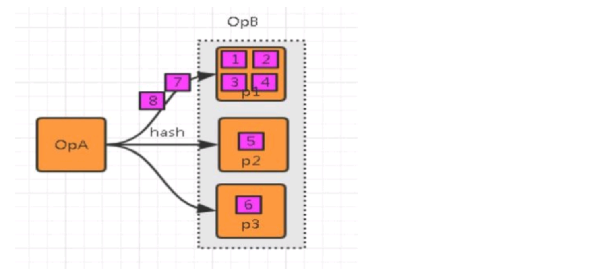
10.1.2 数据倾斜的影响
单点问题
数据集中在某些分区上（subtask），导致数据严重不平衡
GC频繁
过多的数据集中在某些JVM（TaskManager），使得JVM的内存资源短缺，导致频繁GC
吞吐下降、延迟增大
数据单点和频繁GC导致吞吐下降、延迟增大
系统崩溃
严重情况下，过长的GC导致TaskManager失联，系统崩溃。
10.1.3 如何定位数据倾斜
步骤1：定位反压
定位反压有2种方式：Flink Web UI自带的反压监控（直接方式）、Flink Task Metrics（间接方式）
通过监控反压的信息，可以获取到数据处理瓶颈的subtask。
步骤2：确定数据倾斜
Flink Web UI自带subtask接收和发送的数据量。当subtask之间处理的数据量有较大的差距，则该subtask出现数据倾斜。如下图所示，红框的subtask出现数据热点。
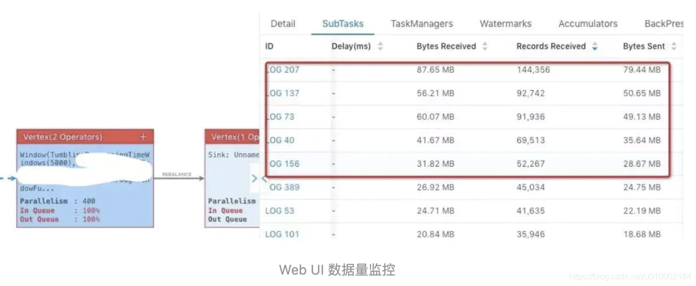
10.1.4 解决方法
不同场景出现的数据倾斜，使用不同的解决方案
10.1.4.1 keyBy 之前发生数据倾斜
如果keyBy之前就存在数据倾斜，上游算子的某些实例可能处理的数据较多，某些实例可能处理的数据较少，产生该情况可能是因为数据源的数据本身就不均匀。
场景：Flink消费kafka上下游并行度不一致导致的数据倾斜
解决思路：需要让Flink任务强制进行shuffle。使用shuffle、rebalance或rescale算子即可将数据均匀分配。
通过调整并发度，解决数据源消费不均匀或者数据源反压的情况。调整并发度的原则：KafkaSource并发度与kafka分区数一样的，或者kafka分区数是KafkaSource并发度的整数倍。
但是会有一种情况，为了加快数据的处理速度，来设置Flink消费者的并行度大于kafka的分区数。如果不做任何的设置会导致部分Flink Consumer线程永远消费不到数据，需要设置redistributing，也就是数据重分配。
xxxxxxxxxx41dataStream.setParallelism(2)2 .rebalance() // .rescale()3 .print()4 .setParallelism(4)其中，Rebalance分区策略，数据会以round-robin的方式对数据进行再次分区，可以全局负载均衡。Rescale分区策略基于上下游并行度，会将数据以循环的方式输出到下游的每个实例中。
10.1.4.2 keyBy后的聚会操作存在数据倾斜
1.为什么不能直接用二次聚合来处理
Flink是实时流处理，如果keyBy之后的聚合操作存在数据倾斜，且没有开窗口（没攒批）的情况下，简单的认为使用两阶段聚合，是不能解决问题的。因为这个时候Flink是来一条处理一条，且向下游发送一条结果，对原来keyBy的维度（第二阶段聚合）来讲，数据并没有减少，且结果重复计算。
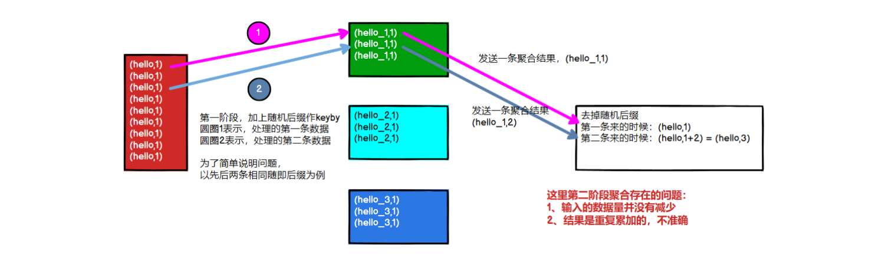
2.使用LocalKeyBy的思想
在keyBy上游算子数据发送之前，首先在上游算子的本地对数据进行聚合后，再发送到下游，使下游接收到的数据量大大减少，从而使得keyBy之后的聚合操作不再是任务的瓶颈。类似MapReduce中Combiner的思想，但是这要求聚合操作必须是多条数据或者一批数据才能聚合，单条数据没有办法通过聚合来减少数据量。从Flink LocalKeyBy实现原理来讲，必然会存在一个积攒批次的过程，在上游算子中必须攒够一定的数据量，对这些数据聚合后再发送到下游。
实现方式：SQL可以指定参数，开启miniBatch和LocalGlobal功能
xxxxxxxxxx131// 初始化table environment2TableEnvironment env = ...3// 获取 tableEnv的配置对象4Configuration conf = env.getConfig().getConfiguation();5// 设置参数：6// 开启miniBatch7conf.setString("table.exec.mini-batch.enabled", "true");8// 批量输出的间隔时间9conf.setString("table.exec.mini-batch.allow-latency", "5s");10// 防止OOM设置每个批次最多缓存数据的条数，可以设置为2万条11conf.setString("table.exec.mini-batch.size", "20000");12// 开启LocalGlobal13conf.setString("table.optimizer.agg-phase-strategy", "TWO_PHASE");
10.1.4.3keyBy后的窗口聚合操作存在数据倾斜
因为使用了窗口，变成了有届数据（攒批）的处理，窗口默认是触发时才会输出一条结果发往下游，所以可以使用两阶段聚合的方式：
实现思路：
第一阶段聚合：key拼接随机数前缀或后缀，进行keyBy、开窗、聚合
注意：聚合完不再是windowedStream，要获取WindowEnd作为窗口标记作为第二阶段分组依据，避免不同窗口的结果聚合到一起。
第二阶段聚合：按照原来的key及windowEnd作keyBy、聚合
举例：统计一个网站各个端的每分钟的pv
xxxxxxxxxx151-- 最内层，讲分组的key，也就是plat加上一个随机打散2select winEnd,split_index(plat1, '_', 0) as plat2, sum(pv)3from4(5 select TUMBLE_END(proc_time, INTERVAL '1' MINUTE) as winEnd, 6 plat1, count(1) as pv7 from8 (9 select plat || '_' || cast(cast(RAND() * 100 as int)as string) as plat1,10 proc_time11 from source_kafka_table12 ) as t13 group by TUMBLE(proc_time. INTERVAL '1' MINUTE), plat114) as t15group by winEnd,split_index(plat1, '_', 0)xxxxxxxxxx61env.addSource(new CustomBeanSource()).keyBy(ele -> ele.getDeviceName() + "-" + new Random().nextInt(10))2 .timeWindow(Time.secons(60))3 .sum("bandWidth")4 .keyBy(ele -> ele.getDeviceName())5 .sum("bandWidth")6 .addSink(...)
10.2 并行度设置
10.2.1 全局并行度计算
开发完成后，先进行压测。任务并行度给10个以下，测试单个并行度的处理上限。
总QPS / 单并行度的处理能力 = 并行度
开发完Flink作业，压测的方式很简单，先在kafka中积压数据，之后开启flink任务，出现反压，就是处理瓶颈。相当于水库先积水，一下子泄洪。
不能只从QPS去得出并行度，因为有些字段少、逻辑简单的任务，单并行度一秒处理几万条数据。而有些数据字段多，处理逻辑复杂，单并行度一秒只能处理1000条数据。
最好根据高峰期QPS压测，并行度 x 1.2倍，富余一些资源。
10.3 Flink SQL优化
10.3.1 设置空闲状态保留时间
忘记设置空闲状态保留时间导致状态爆炸，列举两个场景：
- FlinkSQL 的regular join（inner、left、right），左右表的数据都会一直保存在状态里，不会清理！要么设置TTL，要么使用FlinkSQL的interval join
- 使用Top-N语法进行去重，重复数据的出现一般都位于特定区间内（例如一个小时或一天内），过了这段时间之后，对应的状态就不再需要了。
Flink SQL可以指定空闲状态（即未更新的状态）被保留的最小时间，当状态中某个key对应的状态未更新的时间达到阈值时，该条状态被自动清理：
xxxxxxxxxx51// API 指定2tableEnv.getConfig().setIdleStateRetention(Duration.ofHours(1));3// 参数指定4Configuration configuration = tableEnv.getConfig().getConfiguration();5configuration.setString("table.exec.state.ttl", "1h")
10.3.2 开启MiniBatch
MiniBatch是微批处理，原理是缓存一定的数据后再触发处理，以减少对State的访问，从而提升吞吐并减少数据的输出量。Minibatch主要依靠在每个Task上注册的Timer线程来触发微批，需要消耗一定的线程调度性能。
开启方式：
xxxxxxxxxx121// 初始化table environment2TableEnvironment env = ...3// 获取tableEnv的配置对象4Configuration conf = env.getConfig().getConfiguration();5// 设置参数：6// 开启MiniBatch7conf.setString("table.exec.mini-batch.enabled", "true")8// 批量输出的间隔时间9conf.setString("table.exec.mini-batch.allow-latency", "5s")10// 防止OOM设置每个批次最多缓存数据的条数，可以设为2万条11conf.setString("table.exec.mini-batch.size", "20000")12
使用场景：
微批处理通过增加延迟换取高吞吐，如果有超低延迟的要求，不建议开启微批处理。通常对于聚合的场景，微批处理可以显著提升系统性能，建议开启。